Apresentações
Introdução
Este documento contem as gravações das entregas do projeto da disciplina Interação Humano , bem como os principais aspectos avaliados na etapa do desenvolvimento.
Entrega 01
Nesta primeira entrega do projeto estão contidos os seguintes pontos:
- Planejamento do Projeto;
- Equipe;
- Lista de sites avaliados;
- Site selecionado para o projeto da disciplina;
- Ferramentas do projeto;
- Processo de Design;
- cronograma das atividades;
- Atas das reuniões;
- Gravação da apresentação.
Aspectos avaliados
Tabela 1 - Aspectos avaliados na entrega 1.
| O github pages possui: | Resposta | Versão, data e horário da avaliação | |
|---|---|---|---|
| Itens do Planejamento Geral do projeto. | 1 – Uma página apresentando os integrantes da equipe (com foto) com nome e sem matrícula? | Sim | 1.1, 12/11/2024, 21:45 |
| 2 - o cronograma do planejamento apresenta todas as atividades de todas as etapas para cada integrante com as datas de início e fim das entrega dos artefatos e com o período da revisão deles? | Sim | 1.2, 12/11/2024, 21:46 | |
| 3 - o cronograma do planejamento apresenta um período de gravação da apresentação de cada etapa. | Sim | 1.2, 12/11/2024, 21:47 | |
| 4 - O cronograma prever um período de revisão/ajustes nos artefatos devidos as considerações dos monitores/professor? | Sim | 1.2, 12/11/2024, 21:56 | |
| 5 - A motivação e os critérios para a escolha do site? | Sim | 1.0, 12/11/2024, 21:52 | |
| 6 - O planejamento e avaliação dos sites selecionados? | Sim | 1.0, 12/11/2024, 21:53 | |
| 7 - Possui opção de contraste de cores? | Sim | 1.1, 12/11/2024, 21:54 | |
| 8 – Os artefatos: Planejamento do Projeto, equipe, lista de sites avaliados, site selecionado para o projeto da disciplina, Ferramentas do projeto, Processo de Design, cronograma das atividades? | Sim | 1.0, 12/11/2024, 21:55 | |
| Itens do Desenvolvimento do projeto. | 1 - O histórico de versão padronizado? | Sim | 1.0, 12/11/2024, 21:55 |
| 2 – O(s) autor(es) e o(s) revisor(es) para cada artefato? | Sim | 1.0, 12/11/2024, 21:58 | |
| 3 - Referências bibliográficas e/ou bibliografia em todos os artefatos? | Sim | 1.0, 12/11/2024, 22:20 | |
| 4 - As tabelas e imagens possuem legenda e fonte e elas chamadas dentro dos texto? | Sim | 1.0, 12/11/2024, 21:59 | |
| 5 - Um texto fazendo uma introdução dos artefatos? | Sim | 1.0, 12/11/2024, 22:00 | |
| 6 - o cronograma executado com quem realizou cada artefato/atividade com as datas de início e fim da construção/realização do artefato/atividade. | Sim | 1.0, 12/11/2024, | |
| 7 - Ata(s) da(s) reuniões (com data, horário de início e do final, participantes, objetivo,atividades definidas etc). | Sim | 1.0, 12/11/2024, 22:03 | |
| 8 – A gravação da reunião do grupo. | Sim | 1.0, 12/11/2024, 22:32 | |
| 9 - Vídeo de apresentação na categoria “não listado” no youtube? | Sim | 1.0, 12/11/2024, 22:03 | |
| Itens do conteúdo da disciplina | A justificativa da escolha do Processo de Design? Mayhew | Sim | 1.0, 12/11/2024, 22:47 |
{kind=link}
Autor(es): Ruan Carvalho, 2024.
Vídeo de autoavaliação
Link: Autoavaliação
Figura 1 - Gráfico das respostas avaliadas na entrega 1
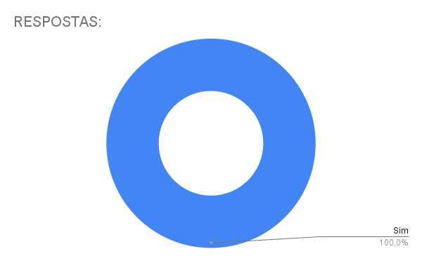
Autor(es): Ruan CarvalhoEntrega 02
Nesta segunda entrega do projeto estão contidos os seguintes pontos:
- Perfil do usuário.
- Aspectos Éticos de Pesquisas Envolvendo Pessoas
- Termo de consentimento
- Análise de tarefas
- Requisitos de usuários
- Cenários
Link para a apresentação
Vídeo 2 - Apresentação da entrega 2.
Link: Apresentação
Aspectos avaliados
Tabela 2 - Aspectos avaliados na entrega 2.
| O github pages possui: | Resposta | Versão, data e horário da avaliação | |
|---|---|---|---|
| Itens do Desenvolvimento do projeto. | Todos os 9 itens: | Sim | 03/12/2024, 22:45 |
| Itens do conteúdo da disciplina. | 1 - O perfil do usuário? | Sim | 1.0, 03/12/2024, 22:47 |
| 2 - O perfil do usuário possui os atributos de um perfil. | Sim | 1.0, 03/12/2024, 22:47 | |
| 3 - O perfil do usuário define os grupos de atributos apresentados no capítulo 8 - Organização do Espaço de Problema. | Sim | 1.0, 03/12/2024, 22:48 | |
| 4 - Considera aspectos Éticos de Pesquisas Envolvendo Pessoas? | Sim | 1.0, 03/12/2024, 22:52 | |
| 5 - Os 4 princípios (da autonomia, da beneficência, princípio da não maleficência e da justiça e equidade) | Sim | 1.0, 03/12/2024, 22:51 | |
| 6 - que solicitará a permissão para gravar a voz ou imagem de qualquer pessoa, antes de começar a gravação? | Sim | 1.0, 03/12/2024, 22:50 | |
| 7 - O termo de consentimento livre e esclarecido dos participantes? | Sim | 1.0, 03/12/2024, 22:50 | |
| 8 - Foram utilizadas no mínimo duas técnicas para coletar dados e levantar os requisitos dos usuários (quanto mais melhor)? | Incompleto | 1.0, 03/12/2024, 22:48 | |
| 9 - Os Cenários? | Sim | 1.0, 03/12/2024, 22:53 | |
| 10 - a Análise de tarefas? | Sim | 1.0, 03/12/2024, 22:53 | |
| 11 – uma atividade para cada integrante do grupos que deve estar modelizado em ao menos duas técnicas para especificar as tarefas? | Sim | 1.0, 03/12/2024, 22:54 | |
| 12 - Utilizaram alguma técnica para especificar as tarefas? | Sim | 1.0, 03/12/2024, 22:54 | |
| Importante: | Cada integrante da equipe deve elaborar ao menos um 1 item de conteúdo da disciplina com referência bibliográfica da fonte e foto do texto da referência. | Sim | 03/12/2024, 22:54 |
Autor(es): João Vitor, Marcelo Adrian, 2024.
Figura 2 - Gráfico das respostas avaliadas na entrega 2
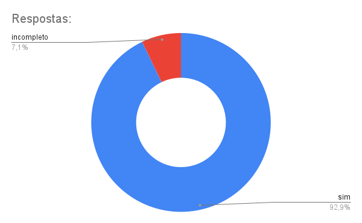
Autor(es): Ruan CarvalhoEntrega 03
Nesta terceira entrega do projeto estão contidos os seguintes pontos:
- Princípios Gerais de Projeto
- Metas de usabilidade
- Guia de Estilo
- As características da plataforma para o projeto
Link para a apresentação
Vídeo 3 - Apresentação da entrega 3.
Link: Apresentação
Tabela 3 - Aspectos avaliados na entrega 3.
| O github pages possui: | Resposta | Versão, data e horário da avaliação | |
|---|---|---|---|
| Itens do Desenvolvimento do projeto. | Todos os 9 itens: | Sim | 03/12/2024, 22:56 |
| 10 - As características da plataforma para o projeto | Sim | 1.0, 03/12/2024, 22:56 | |
| 11 - Os Princípios Gerais do Projeto que serão utilizados no projeto? | Sim | 1.0, 03/12/2024, 23:02 | |
| 12 - Os Princípios Gerais do Projeto contém os seguintes tópicos? 1- correspondência com as expectativas dos usuários; 2- simplicidade nas estruturas das tarefas; 3- equilíbrio entre controle e liberdade do usuário 4- consistência e padronização; promoção da eficiência do usuário; 5- antecipação das necessidades do usuário; 6 - visibilidade e reconhecimento; 7- conteúdo relevante e expressão adequada; 8 - projeto para erros. |
Incompleto | 1.0, 03/12/2024, 22:59 | |
| 13 - As metas de usabilidade que devem ser alcançadas no projeto ou os objetivos de uma avaliação de IHC. | Sim | 1.0, 03/12/2024, 23:05 | |
| 14 - A razão da seleção das metas de usabilidade? | Sim | 1.0, 03/12/2024, 23:06 | |
| 15 - O Guia de Estilo do projeto? | Incompleto | 1.0, 03/12/2024, 23:06 | |
| 16 - O Guia de Estilo do projeto possui a seguinte estrutura: • 1. Introdução (com Objetivo do guia de estilo, Organização e conteúdo do guia de estilo, Público-alvo do guia de estilos (programadores, gerentes, equipe de suporte), Como utilizar o guia (em produção e manutenção), Como manter o guia • 2. Resultados de análise • Descrição do ambiente de trabalho do usuário • 3. Elementos de interface • Disposição espacial e grid • Janelas • Tipografia • Cores • 4. Elementos de interação - • Estilos de interação • Seleção de um estilo • Aceleradores (teclas de atalho) • 5. Elementos de ação • Preenchimento de campos • Seleçã • Ativação • 6. Vocabulário e padrões • Terminologia • Tipos de tela (para tarefas comuns) • Sequências de diálogos (e.g., para feedback ou confirmação de uma operação) |
Incompleto | 1.0, 03/12/2024, 23:06 | |
| 17 - O Guia de Estilo corresponde ao site avaliado? | Sim | 1.0, 03/12/2024, 23:09 | |
| Importante: | Cada integrante da equipe deve elaborar ao menos um 1 item de conteúdo da disciplina com referência bibliográfica da fonte e foto do texto da referência. | Sim | 03/12/2024, 23:12 |
Autor(es): João Vitor, 2024.
Figura 3 - Gráfico das respostas avaliadas na entrega 3

Entrega 04
Nesta quarta entrega do projeto estão contidos os seguintes pontos:
- Planejamento da avaliação do Storyboard e Análise de tarefas
- Planejamento do relato dos resultados da avaliação do Storyboard
- Planejamento do relato dos resultados da avaliação da Análise de tarefas
Link para a apresentação
Vídeo 4 - Apresentação da entrega 4.
Link: Apresentação
Tabela 4 - Aspectos avaliados na entrega 4.
| O github pages possui: | Resposta | Versão, data e horário da avaliação | |
|---|---|---|---|
| Itens do Desenvolvimento do projeto. | Todos os 9 itens: | Sim | 10/12/2024, 21:56 |
| 2 - O planejamento da avaliação segue o Framework DECIDE? | sim | 1.1, 10/12/2024, 21:57 | |
| 3- Descreve o(s) objetivo(s) da avaliação? (apropriação de tecnologia pelos usuários; ideias e alternativas de design; conformidade com um padrão; e/ou problemas na interação e na interface na fase do modelo conceitual) | sim | 1.1, 10/12/2024, 21:58 | |
| 4 - Os métodos de avaliação a serem utilizados? Adicionar referência bibliográfica da fonte e foto do texto da referência explicando os métodos de avaliação. Autor: Simone Barbosa | sim | 1.1, 10/12/2024, 21:59 | |
| 5 - As questões práticas da avaliação (sobre o recrutamento dos usuários que participarão da avaliação (onde e o perfil), quantos usuários participarão da avaliação e a razão dessa quantidade, presencial real ou remota; a preparação e o uso dos equipamentos necessários, os prazos; o orçamento; recursos de mão-de-obra necessária para conduzir a avaliação)? | sim | 1.1, 10/12/2024, 22:00 | |
| 6 - As questões éticas ( se os participantes da avaliação devem ser respeitados e não podem ser prejudicados direta ou indiretamente, nem durante os experimentos, nem após a divulgação dos resultados da avaliação.)? | sim | 1.0, 10/12/2024, 22:01 | |
| 7 - A estrutura do relatório do resultado da avaliação (os objetivos da avaliação; uma breve descrição do método de prototipação em papel; o número e o perfil de avaliadores e dos participantes; as tarefas executadas pelos participantes; lista de problemas encontrados etc)? | sim | 1.1, 10/12/2024, 22:06 | |
| 8 - Um cronograma (data e horário) e local para realização da avaliação do StoryBoard e da Análise das Tarefas? | sim | 1.0, 10/12/2024, 22:07 | |
| 9 – cada desenho do StoryBoard está relacionado uma especificação do artefato da Análise de Tarefas? | sim | 1.0, 10/12/2024, 22:07 | |
| 10 – quantidade de storyboards é igual a quantidade de integrantes do grupo? | sim | 1.0, 10/12/2024, 22:09 | |
| 11 - A definição do teste piloto e data para realização do teste piloto antes da avaliação? Adicionar referência bibliográfica da fonte e foto do texto da referência explicando o teste piloto. Autor: Simone Barbosa | sim | 1.0, 10/12/2024, 22:11 | |
| 12 - O resultado do teste piloto não será apresentado no resultado da avaliação? | sim | 1.0, 10/12/2024, 22:12 | |
| 13 - Os itens que o avaliador deve realizar/anotar durante a avaliação (listar os problemas encontrados, priorizar a correção dos problemas não resolvidos)? | sim | 1.0, 10/12/2024, 22:08 | |
| Importante | Cada integrante da equipe deve elaborar ao menos um 1 item de conteúdo da disciplina com referência bibliográfica da fonte e foto do texto da referência. | sim | 10/12/2024, 21:54 |
Autor(es): Ruan Carvalho, 2024.
Figura 4 - Gráfico das respostas avaliadas na entrega 4
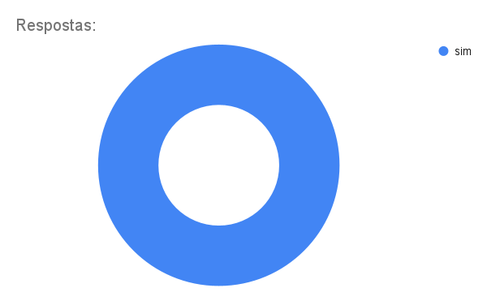
Autor(es): Ruan CarvalhoEntrega 05
Tabela 5 - Aspectos avaliados na entrega 5.
| Item | Pergunta | Resposta | Versão, data e horário da avaliação | Referência |
|---|---|---|---|---|
| 1 | O teste-piloto foi realizado, seguindo a estrutura planejada, e está devidamente documentado? | Sim | 1.0, 05/01/2025 e 22:30 | |
| 2 | As entrevistas foram gravadas, disponibilizadas para análise? | Sim | 1.0, 05/01/2025 e 22:30 | |
| 3 | Conduziram-se em conformidade com os critérios estabelecidos no termo de consentimento informado? | Sim | 1.0, 05/01/2025 e 22:30 | |
| 4 | Os storyboards e as análises de tarefas foram apresentados aos entrevistados de forma clara e compreensível no decorrer das entrevistas? | Sim | 1.0, 05/01/2025 e 22:30 | |
| 5 | Os participantes recrutados representam adequadamente o público-alvo? | Sim | 1.0, 05/01/2025 e 22:30 | |
| 6 | O storyboard e as análises de tarefas refletem de forma detalhada as funcionalidades propostas? | Sim | 1.0, 05/01/2025 e 22:30 | |
| 7 | O planejamento do protótipo de papel segue o framework DECIDE? | Sim | 1.0, 05/01/2025 e 22:30 | |
| 8 | Foi definida uma estrutura para o teste-piloto? | Sim | 1.0, 05/01/2025 e 22:30 | |
| 9 | O storyboard e as análises de tarefas refletem de forma detalhada as funcionalidades propostas? | Sim | 1.0, 05/01/2025 e 22:30 | |
| 10 | O planejamento da avaliação e do relato do protótipo de papel possui um cronograma definido? | Sim | 1.0, 05/01/2025 e 22:30 | |
| 11 | As questões éticas estão inclusas no planejamento de avaliação do protótipo de papel? | Sim | 1.0, 05/01/2025 e 22:30 |
Autor(es): Marcelo Adrian, 2025.
Figura 5 - Gráfico das respostas avaliadas na entrega 5
Autor(es): Ruan Carvalho, 2025.
Entrega 06
Tabela 6 - Aspectos avaliados na entrega 6.
| Item | Pergunta | Resposta | Versão, data e horário da avaliação | Referência |
|---|---|---|---|---|
| 1 | A avaliação do protótipo de papel foi realizada por pelo menos 2 avaliadores? | Incompleto | 1.0, 14/01/2025 às 23:00 às 23:00 |  Página: 360, Capítulo 10. Métodos de Avaliação de IHC. Livro: SIMONE DINIZ JUNQUEIRO BARBOSA, BRUNO SANTANA DA SILVA, Interação Humano-Computador, 1a. Edição, Editora Campus, 2010. Publicado em: 03/05/2021. Página: 360, Capítulo 10. Métodos de Avaliação de IHC. Livro: SIMONE DINIZ JUNQUEIRO BARBOSA, BRUNO SANTANA DA SILVA, Interação Humano-Computador, 1a. Edição, Editora Campus, 2010. Publicado em: 03/05/2021. |
| 2 | A avaliação teve um responsável por simular o comportamento do sistema e outro por observar a experiência de uso? | Incompleto | 1.0, 14/01/2025 às 23:00 |  Página: 360, Capítulo 10. Métodos de Avaliação de IHC. Livro: SIMONE DINIZ JUNQUEIRO BARBOSA, BRUNO SANTANA DA SILVA, Interação Humano-Computador, 1a. Edição, Editora Campus, 2010. Publicado em: 03/05/2021. Página: 360, Capítulo 10. Métodos de Avaliação de IHC. Livro: SIMONE DINIZ JUNQUEIRO BARBOSA, BRUNO SANTANA DA SILVA, Interação Humano-Computador, 1a. Edição, Editora Campus, 2010. Publicado em: 03/05/2021. |
| 3 | O responsável por simular o sistema busca compreender as ações do usuário sobre o protótipo em papel e possivelmente as intenções que motivaram tais ações? | Sim | 1.0, 14/01/2025 às 23:00 |  Página: 360, Capítulo 10. Métodos de Avaliação de IHC. Livro: SIMONE DINIZ JUNQUEIRO BARBOSA, BRUNO SANTANA DA SILVA, Interação Humano-Computador, 1a. Edição, Editora Campus, 2010. Publicado em: 03/05/2021. Página: 360, Capítulo 10. Métodos de Avaliação de IHC. Livro: SIMONE DINIZ JUNQUEIRO BARBOSA, BRUNO SANTANA DA SILVA, Interação Humano-Computador, 1a. Edição, Editora Campus, 2010. Publicado em: 03/05/2021. |
| 4 | O responsável por simular o sistema modifica a interface conforme o comportamento planejado para o sistema, sem, no entanto, fornecer explicações ou orientações para o usuário? | Não. | 1.0, 14/01/2025 às 23:00 | 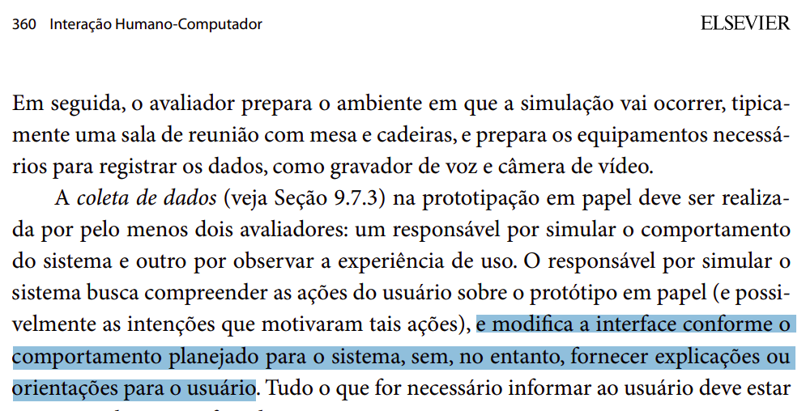 Página: 360, Capítulo 10. Métodos de Avaliação de IHC. Livro: SIMONE DINIZ JUNQUEIRO BARBOSA, BRUNO SANTANA DA SILVA, Interação Humano-Computador, 1a. Edição, Editora Campus, 2010. Publicado em: 03/05/2021. |
| 5 | Tudo o que for necessário informar ao usuário está representado na interface do sistema? | Sim. | 1.0, 14/01/2025 às 23:00 |  Página: 360, Capítulo 10. Métodos de Avaliação de IHC. Livro: SIMONE DINIZ JUNQUEIRO BARBOSA, BRUNO SANTANA DA SILVA, Interação Humano-Computador, 1a. Edição, Editora Campus, 2010. Publicado em: 03/05/2021. Página: 360, Capítulo 10. Métodos de Avaliação de IHC. Livro: SIMONE DINIZ JUNQUEIRO BARBOSA, BRUNO SANTANA DA SILVA, Interação Humano-Computador, 1a. Edição, Editora Campus, 2010. Publicado em: 03/05/2021. |
| 6 | No início da sessão, o responsável por simular o comportamento do sistema apresenta o protótipo em papel e explica como estão representados os elementos de interface (widgets) e como os participantes podem “interagir” com eles? | Sim. | 1.0, 14/01/2025 às 23:00 |  Página: 360, Capítulo 10. Métodos de Avaliação de IHC. Livro: SIMONE DINIZ JUNQUEIRO BARBOSA, BRUNO SANTANA DA SILVA, Interação Humano-Computador, 1a. Edição, Editora Campus, 2010. Publicado em: 03/05/2021. Página: 360, Capítulo 10. Métodos de Avaliação de IHC. Livro: SIMONE DINIZ JUNQUEIRO BARBOSA, BRUNO SANTANA DA SILVA, Interação Humano-Computador, 1a. Edição, Editora Campus, 2010. Publicado em: 03/05/2021. |
| 7 | Depois de apresentar a interface, os avaliadores entregam os cenários ao participante e explicam as tarefas a serem executadas? | Sim. | 1.0, 14/01/2025 às 23:00 | 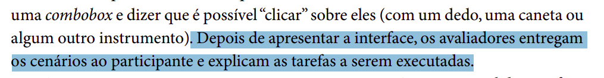 Página: 360, Capítulo 10. Métodos de Avaliação de IHC. Livro: SIMONE DINIZ JUNQUEIRO BARBOSA, BRUNO SANTANA DA SILVA, Interação Humano-Computador, 1a. Edição, Editora Campus, 2010. Publicado em: 03/05/2021. |
| 8 | O avaliador modifica a interface com base nas interações do usuário? | Sim. | 1.0, 14/01/2025 às 23:00 |  Página: 360, Capítulo 10. Métodos de Avaliação de IHC. Livro: SIMONE DINIZ JUNQUEIRO BARBOSA, BRUNO SANTANA DA SILVA, Interação Humano-Computador, 1a. Edição, Editora Campus, 2010. Publicado em: 03/05/2021. Página: 360, Capítulo 10. Métodos de Avaliação de IHC. Livro: SIMONE DINIZ JUNQUEIRO BARBOSA, BRUNO SANTANA DA SILVA, Interação Humano-Computador, 1a. Edição, Editora Campus, 2010. Publicado em: 03/05/2021. |
| 9 | Durante a simulação da interação, o observador está atento às partes da interface que funcionaram bem e que funcionaram mal, quais tarefas foram concluídas com sucesso, quais erros foram cometidos, quais comentários foram feitos e quaisquer outros dados que auxiliem a apreciar a qualidade da interface? | Sim. | 1.0, 14/01/2025 às 23:00 | 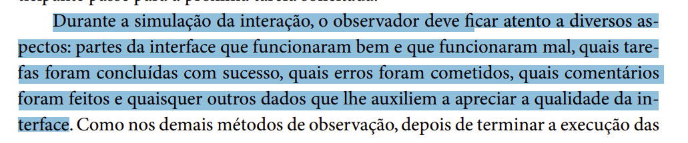 Página: 360, Capítulo 10. Métodos de Avaliação de IHC. Livro: SIMONE DINIZ JUNQUEIRO BARBOSA, BRUNO SANTANA DA SILVA, Interação Humano-Computador, 1a. Edição, Editora Campus, 2010. Publicado em: 03/05/2021. |
| 10 | Os avaliadores realizaram uma entrevista pós-teste para colher a opinião do participante sobre o protótipo da interface e sugestões de melhorias? | Incompleto. | 1.0, 14/01/2025 às 23:00 | 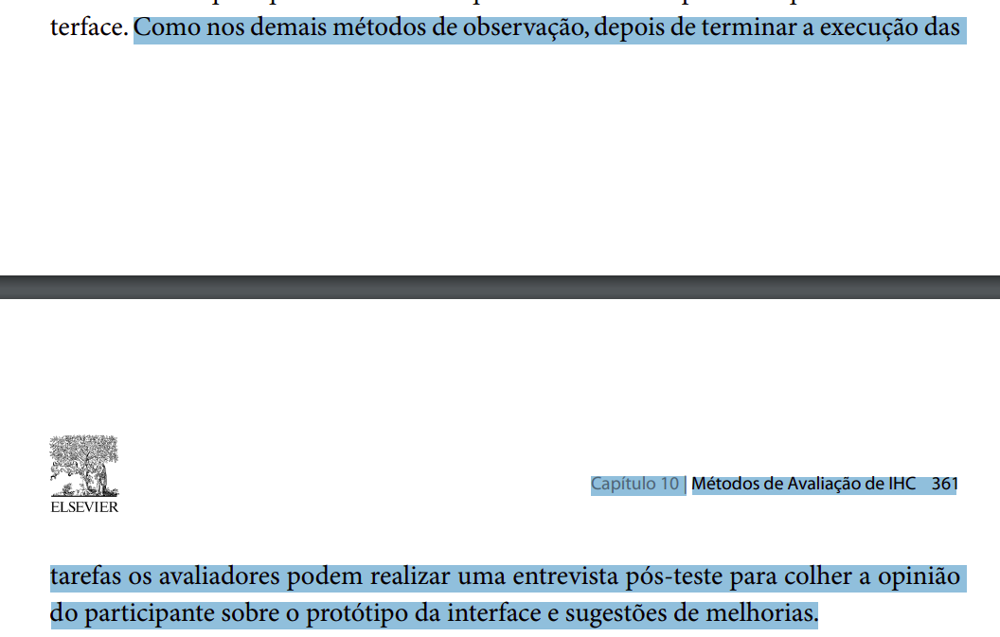 Páginas: 360 e 361, Capítulo 10. Métodos de Avaliação de IHC. Livro: SIMONE DINIZ JUNQUEIRO BARBOSA, BRUNO SANTANA DA SILVA, Interação Humano-Computador, 1a. Edição, Editora Campus, 2010. Publicado em: 03/05/2021. |
| 11 | A partir da análise dos avaliadores após a avaliação, foi feita uma lista de problemas na interface que devem ser corrigidos, além de indicações de partes do sistema que podem ser aperfeiçoadas? | Sim. | 1.0, 14/01/2025 às 23:00 |  Página: 361, Capítulo 10. Métodos de Avaliação de IHC. Livro: SIMONE DINIZ JUNQUEIRO BARBOSA, BRUNO SANTANA DA SILVA, Interação Humano-Computador, 1a. Edição, Editora Campus, 2010. Publicado em: 03/05/2021. Página: 361, Capítulo 10. Métodos de Avaliação de IHC. Livro: SIMONE DINIZ JUNQUEIRO BARBOSA, BRUNO SANTANA DA SILVA, Interação Humano-Computador, 1a. Edição, Editora Campus, 2010. Publicado em: 03/05/2021. |
| 12 | Os problemas fáceis de resolver foram resolvidos antes da execução da próxima simulação de uso com outro participante? | Não. | 1.0, 14/01/2025 às 23:00 |  Página: 361, Capítulo 10. Métodos de Avaliação de IHC. Livro: SIMONE DINIZ JUNQUEIRO BARBOSA, BRUNO SANTANA DA SILVA, Interação Humano-Computador, 1a. Edição, Editora Campus, 2010. Publicado em: 03/05/2021. Página: 361, Capítulo 10. Métodos de Avaliação de IHC. Livro: SIMONE DINIZ JUNQUEIRO BARBOSA, BRUNO SANTANA DA SILVA, Interação Humano-Computador, 1a. Edição, Editora Campus, 2010. Publicado em: 03/05/2021. |
Autor(es): Felipe Rodrigues, 2025.
Figura 6 - Gráfico das respostas avaliadas na entrega 6
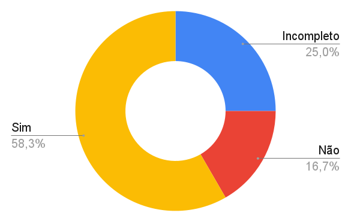
Autor(es): João Vitor, 2025.
Entrega 07
Tabela 7 - Aspectos avaliados na entrega 7.
| Item | Pergunta | Resposta | Versão, data e horário da avaliação | Referência |
|---|---|---|---|---|
| 1 | O protótipo de alta fidelidade incorpora decisões sobre tamanhos, posições, cores, fontes e outros detalhes visuais? | Sim | 1.0, 26/01/2025 às 21:58 | 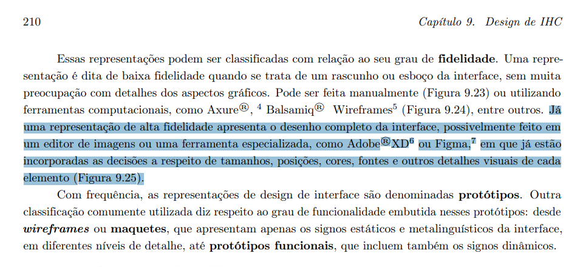 Página: 210, Capítulo 9.4. Design da Interface. Livro: Barbosa, S. D. J.; Silva, B. S. da; Silveira, M. S.; Gasparini, I.; Darin, T.; Barbosa, G. D. J. (2021) Interação Humano-Computador e Experiência do usuário. Autopublicação. |
| 2 | As ferramentas utilizadas para criar o protótipo de alta fidelidade foram mencionadas? | Sim | 1.3, 26/01/2025 às 22:01 | Página: 210, Capítulo 9.4. Design da Interface. Livro: Barbosa, S. D. J.; Silva, B. S. da; Silveira, M. S.; Gasparini, I.; Darin, T.; Barbosa, G. D. J. (2021) Interação Humano-Computador e Experiência do usuário. Autopublicação. |
| 3 | Foram coletados registros adicionais como vídeos de interação, teclas digitadas ou comentários em áudio dos participantes? | Sim | 1.0, 26/01/2025 às 22:03 |  Página: 289, Capítulo 12.2. Avaliação de IHC através de Observação. Livro: Barbosa, S. D. J.; Silva, B. S. da; Silveira, M. S.; Gasparini, I.; Darin, T.; Barbosa, G. D. J. (2021) Interação Humano-Computador e Experiência do usuário. Autopublicação. Página: 289, Capítulo 12.2. Avaliação de IHC através de Observação. Livro: Barbosa, S. D. J.; Silva, B. S. da; Silveira, M. S.; Gasparini, I.; Darin, T.; Barbosa, G. D. J. (2021) Interação Humano-Computador e Experiência do usuário. Autopublicação. |
| 4 | O desempenho dos participantes foi observado e medido, incluindo o número de erros, tempo de execução? | Sim | 1.0, 26/01/2025 às 22:04 |  Página: 289, Capítulo 12.2. Avaliação de IHC através de Observação. Livro: Barbosa, S. D. J.; Silva, B. S. da; Silveira, M. S.; Gasparini, I.; Darin, T.; Barbosa, G. D. J. (2021) Interação Humano-Computador e Experiência do usuário. Autopublicação. Página: 289, Capítulo 12.2. Avaliação de IHC através de Observação. Livro: Barbosa, S. D. J.; Silva, B. S. da; Silveira, M. S.; Gasparini, I.; Darin, T.; Barbosa, G. D. J. (2021) Interação Humano-Computador e Experiência do usuário. Autopublicação. |
| 5 | Foram identificados e categorizados os problemas encontrados na interação dos usuários com o protótipo? | Sim | 1.0, 26/01/2025 às 22:05 | 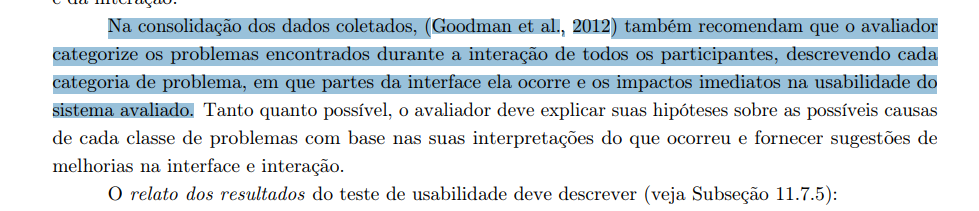 Página: 289, Capítulo 12.2. Avaliação de IHC através de Observação. Livro: Barbosa, S. D. J.; Silva, B. S. da; Silveira, M. S.; Gasparini, I.; Darin, T.; Barbosa, G. D. J. (2021) Interação Humano-Computador e Experiência do usuário. Autopublicação. |
| 6 | Para cada problema observado, os entrevistadores elaboraram explicações sobre as causas e propôs sugestões de melhorias? | Sim | 1.0, 26/01/2025 às 22:07 |  Página: 289, Capítulo 12.2. Avaliação de IHC através de Observação. Livro: Barbosa, S. D. J.; Silva, B. S. da; Silveira, M. S.; Gasparini, I.; Darin, T.; Barbosa, G. D. J. (2021) Interação Humano-Computador e Experiência do usuário. Autopublicação. Página: 289, Capítulo 12.2. Avaliação de IHC através de Observação. Livro: Barbosa, S. D. J.; Silva, B. S. da; Silveira, M. S.; Gasparini, I.; Darin, T.; Barbosa, G. D. J. (2021) Interação Humano-Computador e Experiência do usuário. Autopublicação. |
| 7 | O relato apresenta os dados em tabelas para análise? | Sim | 1.0, 26/01/2025 às 22:08 | 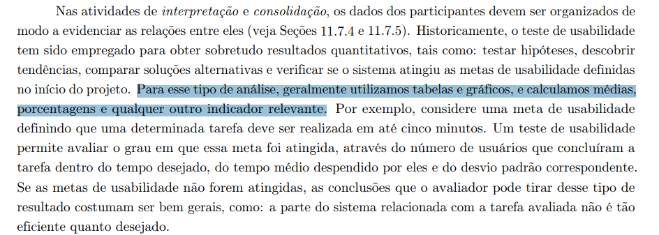 Página: 289, Capítulo 12.2. Avaliação de IHC através de Observação. Livro: Barbosa, S. D. J.; Silva, B. S. da; Silveira, M. S.; Gasparini, I.; Darin, T.; Barbosa, G. D. J. (2021) Interação Humano-Computador e Experiência do usuário. Autopublicação. |
Figura 7 - Gráfico das respostas avaliadas na entrega 7
Autor(es): Ruan Carvalho, 2025.
Referência Bibliográfica
BARBOSA, Simone Diniz Junqueira; SILVA, Bruno Santana da. Interação Humano-Computador. Rio de Janeiro: Elsevier, 2010.
Barbosa, S. D. J.; Silva, B. S. da; Silveira, M. S.; Gasparini, I.; Darin, T.; Barbosa, G. D. J. (2021) Interação Humano-Computador e Experiência do usuário. Autopublicação.
Bibliografia
SILVA, André Barros. Plano de Ensino - FIHC 022024 Turma 01 v1. Interação Humano Computador, 2° semestre de 2024. Disponível em: Plano de Ensino.
Histórico de Versões
Tabela 2 - Histórico de versões.
| Versão | Descrição | Autor(es) | Data | Revisor(es) | Data de revisão |
|---|---|---|---|---|---|
| 1.0 | criação do arquivo | Ruan Carvalho | 12/11/2024 | Marcelo Adrian | 12/11/2024 |
| 1.1 | Revisão da auto avaliação | Marcelo Adrian | 24/11/2024 | Felipe Rodrigues | 24/11/2024 |
| 1.2 | Padronização de Referências Bibliográficas, Bibliografia e Autor(es) | Felipe Rodrigues | 23/11/2024 | Marcelo Adrian | 24/11/2024 |
| 1.3 | Criação inicial da Autoavaliação 2 | Marcelo Adrian | 02/12/2024 | João Vitor | 03/12/2024 |
| 1.4 | Adição da autoavaliação 2 e 3 | João Vitor | 03/12/2024 | Felipe Rodrigues | 03/12/2024 |
| 1.5 | Criação da tabela 4 e adição de gráficos | Ruan Carvalho | 09/12/2024 | Marcelo Adrian | 10/12/2024 |
| 1.6 | Criação da tabela 5 | Marcelo Adrian | 05/01/2025 | Ruan Carvalho | 05/01/2025 |
| 1.7 | Criação da lista de verificação da entrega 6 | Felipe Rodrigues | 14/01/2025 | João Vitor | 08/02/2025 |
| 1.8 | Avaliação do grupo | Felipe Rodrigues | 14/01/2025 | João Vitor | 08/02/2025 |
| 1.8 | Criação da lista de verificação da entrega 7 | João Vitor | 26/01/2025 |